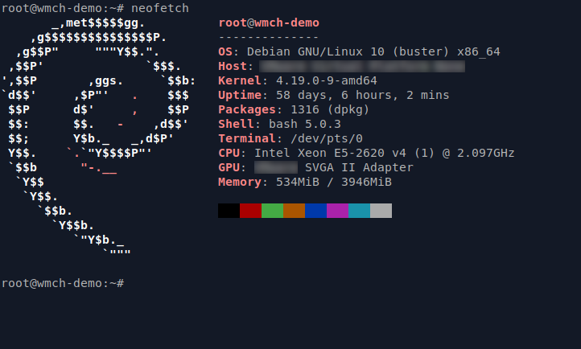

Debian is where I go for learning purposes and specific tasks. It's not my daily driver — that's Fedora KDE — but it's the distribution I reach for when I want to understand something more carefully, or when I need a system that is as stable and predictable as possible for a defined purpose.
Debian stable is famously conservative. Packages lag behind upstream by design, and the release cycle is long. This is exactly what you want for a server, a build environment, or a machine that needs to keep working without surprises. It is not ideal if you want recent software on a general-use desktop, but it's not trying to be that.
A significant portion of the Linux ecosystem traces back to Debian — Ubuntu is built on it, Linux Mint Cinnamon is built on Ubuntu, and the .deb package format is everywhere. Understanding how Debian works gives you a foundation that transfers broadly. The package manager apt, the structure of /etc, the way services are managed with systemctl — all of this is standard across the Debian family tree and well-documented.
I'm also interested in Linux Mint Debian Edition as a middle ground — Mint's approachable desktop on a Debian stable base, with a longer support window than Ubuntu-based Mint. Worth exploring.